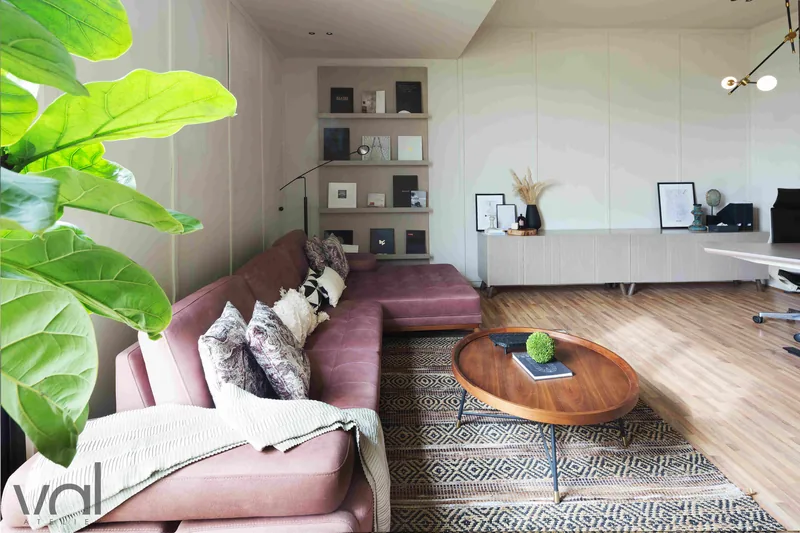
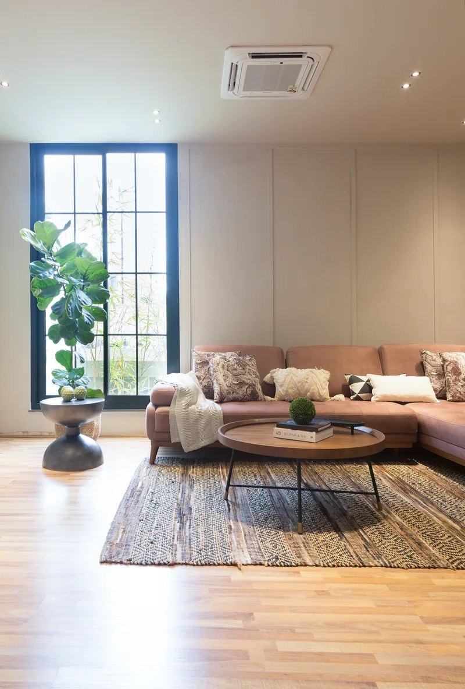
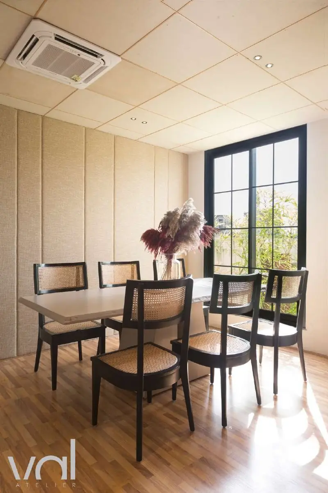
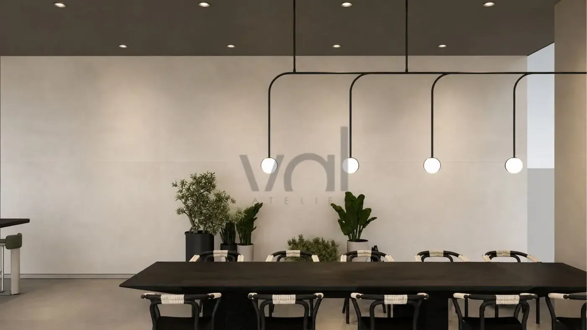

A design-led interior architecture studio in Hyderabad, published in Architectural Digest India, working across homes, boutiques, cafés and workspaces, and on its own room, which is where most of the material decisions still get made.

The studio · Hyderabad



Interiors made to be lived in, not looked at.
We are a design-led interior architecture studio working end to end: concept, drawings, joinery detail, site and the final styling layer. Led by the principal throughout, so the people who draw a project are the people on site when it is built.
Every project starts in the same unglamorous way: understanding how a space is actually used. What time the light arrives. Where people put their keys down. Which wall the family already argues over. The plan comes out of those answers, not out of a reference image.
From there the work is largely subtraction. One ground tone, a short list of materials, and enough restraint to let texture and daylight carry the room. When a project reads as calm, it is usually because a great many things were taken out of it.
The result is meant to age well. Stone that dulls nicely, timber that darkens, plaster that keeps its hand. Nothing that needs to be replaced the season after it is photographed.

A room should feel warm the moment you step into it.Everything else is detail
A studio, run deliberately.
Every project drawn and detailed in the studio, with the same hand on it from the first walkthrough to the day the furniture lands.
The material library
Stone, timber, plaster and textile kept where daylight falls on them. Palettes are settled here against real samples, not on a screen, which is why they survive the site.
Drawn, not improvised
Joinery, lighting and finishes are drawn out properly before anything is built. It is what keeps a site on programme and a budget close to where it started.
One hand throughout
Work is taken on selectively, so the person who drew a detail is the person standing in front of it on site.
Across programmes
Homes, club houses, marketing suites, offices, a jewellery boutique, a marble showroom and a spice kitchen. A kitchen teaches you about wear; a home teaches you about quiet. Each improves the other.
Five stages, no surprises.
Each stage ends with something you can hold: a plan, a palette, a drawing set, a finished room. You always know which one we are in.
- 01
Discovery
Understanding how you live
- 02
Concept & design
Mood, materiality, layout
- 03
Detailing & selections
The layered decisions
- 04
Execution
Site, vendors, craft
- 05
Handover
The finished home
Where the difference shows.
Selective about the work, and unhurried on it. That is the whole strategy.
Senior throughout
The studio is selective about what it takes on, and you are never handed to a junior team once the concept is signed off.
Language first
Every project is given a language of its own before anything is drawn, and each room is then held to it. It is what keeps a house reading as one house rather than a set of rooms.
Textures and light
Surfaces are chosen for how they take light, and the lighting is drawn alongside them rather than added at the end. Neither reads on its own, so neither is settled on its own.
Across typologies
Homes, retail and hospitality in the same practice. A café teaches you about wear; a home teaches you about quiet. Both improve the other.